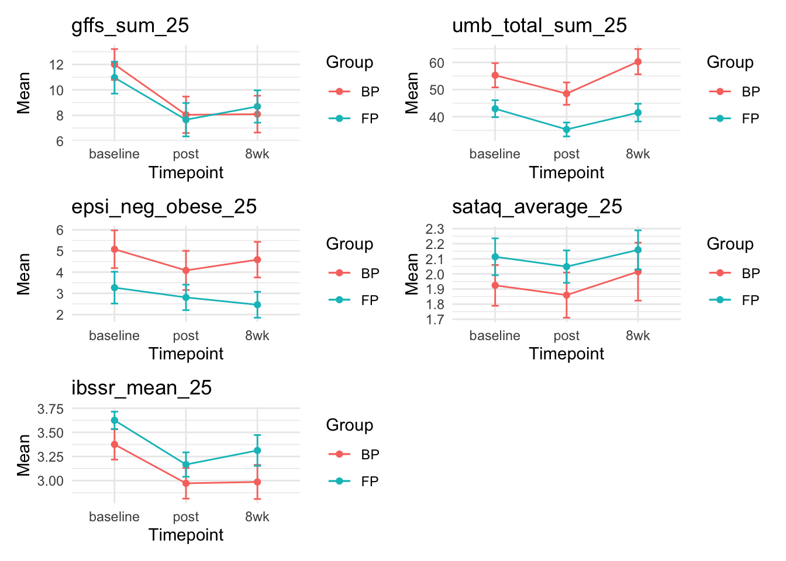

5 Intervention Effects KS
6 Intervention Effects

| group | Variable | Cohens_d_baseline_post | Cohens_d_baseline_8_week | |
|---|---|---|---|---|
| gffs_sum_25.1 | BP | gffs_sum_25 | -0.6084333 | -0.5972547 |
| gffs_sum_25.2 | FP | gffs_sum_25 | -0.5050240 | -0.3524653 |
| umb_total_sum_25.1 | BP | umb_total_sum_25 | -0.3209451 | 0.2237849 |
| umb_total_sum_25.2 | FP | umb_total_sum_25 | -0.5241664 | -0.0883219 |
| epsi_neg_obese_25.1 | BP | epsi_neg_obese_25 | -0.2243805 | -0.1158431 |
| epsi_neg_obese_25.2 | FP | epsi_neg_obese_25 | -0.1328859 | -0.2309433 |
| sataq_average_25.1 | BP | sataq_average_25 | -0.0921853 | 0.1118723 |
| sataq_average_25.2 | FP | sataq_average_25 | -0.1115387 | 0.0709119 |
| ibssr_mean_25.1 | BP | ibssr_mean_25 | -0.5206874 | -0.4748678 |
| ibssr_mean_25.2 | FP | ibssr_mean_25 | -0.8204996 | -0.4733329 |
| timepoint | group | Mean | Variable |
|---|---|---|---|
| 8wk | BP | 8.090909 | gffs_sum_25 |
| 8wk | FP | 8.692308 | gffs_sum_25 |
| baseline | BP | 12.000000 | gffs_sum_25 |
| baseline | FP | 10.961538 | gffs_sum_25 |
| post | BP | 8.041667 | gffs_sum_25 |
| post | FP | 7.653846 | gffs_sum_25 |
| 8wk | BP | 60.250000 | umb_total_sum_25 |
| 8wk | FP | 41.500000 | umb_total_sum_25 |
| baseline | BP | 55.250000 | umb_total_sum_25 |
| baseline | FP | 42.937500 | umb_total_sum_25 |
| post | BP | 48.500000 | umb_total_sum_25 |
| post | FP | 35.312500 | umb_total_sum_25 |
| 8wk | BP | 4.590909 | epsi_neg_obese_25 |
| 8wk | FP | 2.461539 | epsi_neg_obese_25 |
| baseline | BP | 5.083333 | epsi_neg_obese_25 |
| baseline | FP | 3.269231 | epsi_neg_obese_25 |
| post | BP | 4.083333 | epsi_neg_obese_25 |
| post | FP | 2.807692 | epsi_neg_obese_25 |
| 8wk | BP | 2.015151 | sataq_average_25 |
| 8wk | FP | 2.159091 | sataq_average_25 |
| baseline | BP | 1.924242 | sataq_average_25 |
| baseline | FP | 2.113636 | sataq_average_25 |
| post | BP | 1.859849 | sataq_average_25 |
| post | FP | 2.048296 | sataq_average_25 |
| 8wk | BP | 2.986111 | ibssr_mean_25 |
| 8wk | FP | 3.312500 | ibssr_mean_25 |
| baseline | BP | 3.375000 | ibssr_mean_25 |
| baseline | FP | 3.625000 | ibssr_mean_25 |
| post | BP | 2.972222 | ibssr_mean_25 |
| post | FP | 3.166667 | ibssr_mean_25 |
# A tibble: 10 × 8
Measure Variable group `Mean baseline` `Mean post` `Mean 8wk`
<chr> <chr> <chr> <dbl> <dbl> <dbl>
1 GFFS gffs_sum_25 Body … 12 8.04 8.09
2 GFFS gffs_sum_25 BAM 11.0 7.65 8.69
3 UMB-FAT umb_total_sum_25 Body … 55.2 48.5 60.2
4 UMB-FAT umb_total_sum_25 BAM 42.9 35.3 41.5
5 EPSI Subscale epsi_neg_obese_25 Body … 5.08 4.08 4.59
6 EPSI Subscale epsi_neg_obese_25 BAM 3.27 2.81 2.46
7 SATAQ sataq_average_25 Body … 1.92 1.86 2.02
8 SATAQ sataq_average_25 BAM 2.11 2.05 2.16
9 IBSS-R ibssr_mean_25 Body … 3.38 2.97 2.99
10 IBSS-R ibssr_mean_25 BAM 3.62 3.17 3.31
# ℹ 2 more variables: `Baseline to Post (Cohen's d)` <dbl>,
# `Baseline to 8wk (Cohen's d)` <dbl>Effect sizes were calculated for each group to assess any reductions in fatphobia, anti-fat bias, and thin ideal internalization between baseline and post session and between baseline and 8-week post session. Effect sizes, means, and standard errors can found in Table XX.